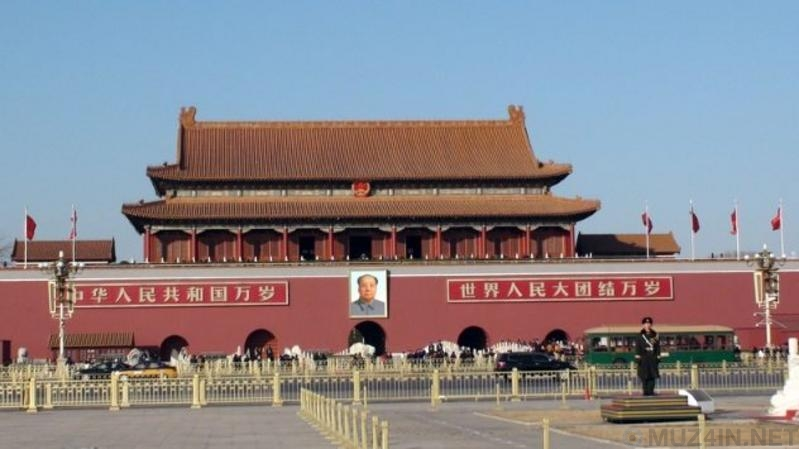
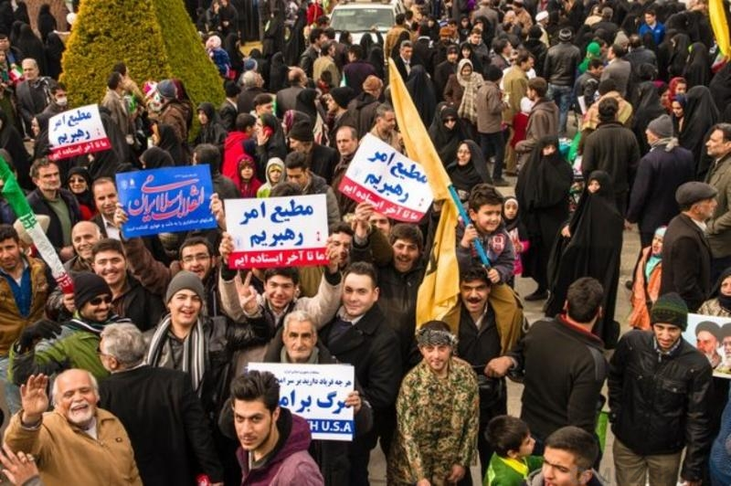

Контакты для связи
Заслуги Anonymous
Разоблачение участия китайской армии в кибератаках против США
Одним из крупнейших дел стала помощь в разоблачении китайских военных, которые предприняли серию нападений на американские компании, организации и правительственные агентства в 2011 году. Американские специалисты по безопасности и правительственные чиновники давно заявляли, что за кибератаками 2011 года на США стоит Китай, но для официального предъявления претензий у них не было доказательств. Китай категорически отрицал все обвинения.
Помощь в борьбе с тиранией правительства Ирана
Группа хакеров предоставила иранским гражданам остро необходимые рекомендации о том, как они могут обойти онлайн-цензуру и беспрепятственно пользоваться Интернетом. Вмешательство «Анонимус» сыграло большую роль в поддержке права иранцев на свободу слова во время восстания.
Кто такие Anonymous?
Anonymous — это идеология, а не группа людей, как предполагает большинство писателей новостей. Последователи этой идеи борются за общедоступность информации, против притеснения свобод правительствами и корпорациями, против коррупции, и против любых других проявлений жизни общества, которые часть этого общества не одобряет. В Anonymous нет лидеров или представителей, никто не может говорить за всех. В Anonymous все равны.